Dish photo credits
swaad-wada is a made-up restaurant on a sample menu. The dish photos are illustrative stand-ins from Wikimedia Commons, used under the licences below and resized to thumbnails. They are not photos of this restaurant’s food. Click a title for the original file and full licence.
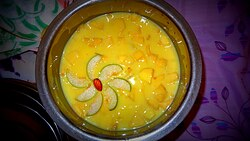
Aamras (in season)Aamras Custard.JPG by Dr. Manavpreet Kaur, CC BY-SA 4.0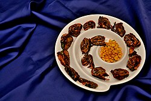
Alu vadiCrispy Alu Vadi from my Kitchen, Pune, Maharashtra.jpg by Sharvarism, CC BY-SA 4.0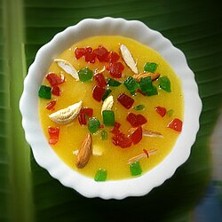
Amrakhand (in season)Aamrakhand.jpg by Harshaddhawale, CC BY-SA 4.0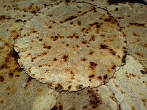
Bajra bhakriBhakri 1.jpg by Hemal0105, CC BY-SA 4.0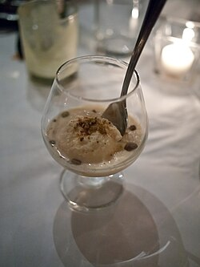
BasundiBasundi Indian Dessert Mithai Sweets.jpg by Edsel Little, CC BY-SA 2.0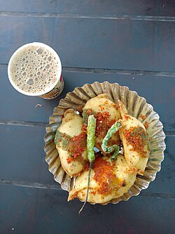
Batata bhaji (dry)Batata bhaji and chai-Pune-Maharashtra.jpg by Wattamwarsamiksha, CC BY-SA 4.0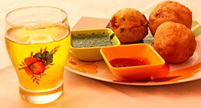
Batata vadaIndian BatataVada.JPG by Arthrajsinh Solanki, CC BY-SA 4.0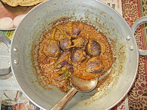
Bharli vangiBharali Vangi (Stuffed Brinjal Curry).jpg by Nilekha, CC BY-SA 4.0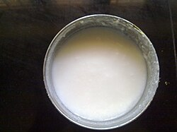
CurdCurd in steel bowl.jpg by Netha Hussain, CC BY-SA 3.0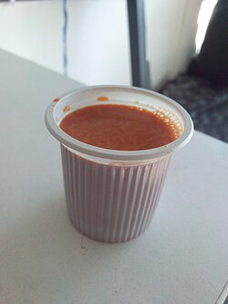
Cutting chaiCutting Chai (Tea).jpg by Jinymystery, CC BY-SA 4.0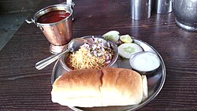
Dahi misalPune Special- Dahi Misal Pav (Hotel Savtamali).jpg by Gauravadeshpande, CC BY-SA 4.0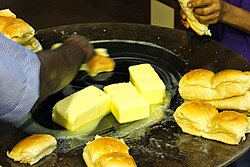
Extra pav (2)Indian Bread in Butter Ocean.JPG by Pratik1203, CC BY-SA 4.0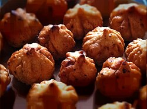
Fried modak (3)Modak - wheat modak fried.JPG by Milindb05, CC BY-SA 4.0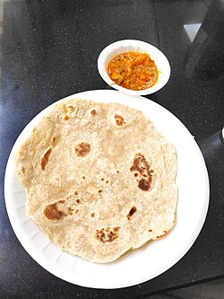
Ghadichi poliChapati 1.jpg by Gaurav Dhwaj Khadka, CC BY-SA 4.0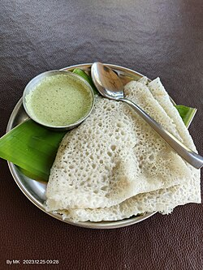
Ghavan with chutneyGhavan - Malvani Dish.jpg by Jiyajale, CC BY-SA 4.0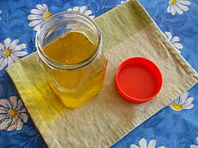
Ghee (tup)Desi ghee1.JPG by Hartej.hundal, CC BY-SA 4.0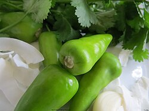
Green chilli thechaVarhadi Thecha.jpg by CookNJoy, CC BY-SA 4.0 Gulab jamun (2)Two Gulab Jamun in a plate 01.jpg by Suyash.dwivedi, CC BY-SA 4.0
Gulab jamun (2)Two Gulab Jamun in a plate 01.jpg by Suyash.dwivedi, CC BY-SA 4.0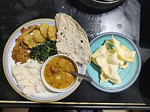
Jowar bhakriJowar Roti.jpg by Chaitaliijagtap, CC BY-SA 4.0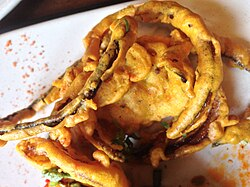
Kanda bhajiPuneri Kanda Bhaji.jpg by Fatfoodie, CC BY-SA 4.0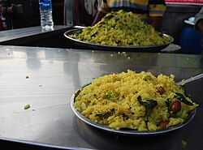
Kanda poheKanda Pohe.jpg by JayanandS, CC BY-SA 4.0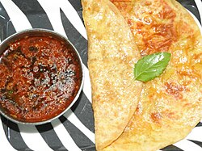
Katachi amtiPuran Poli and Katachi Amti by Dr. Raju Kasambe 02.jpg by Dr. Raju Kasambe, CC BY-SA 4.0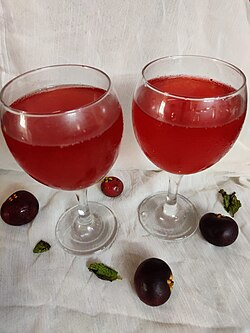
Kokum sarbatKokum or Punarpuli sharbat.jpg by Prajna Prabhu, CC BY-SA 4.0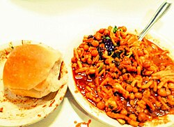
Kolhapuri misalSpecial Kolhapuri Misal Pav.jpg by Amitsu12, CC BY-SA 4.0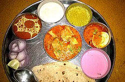
Kolhapuri thali (veg)Kolhapuri Thali of Kolhapur, Maharashtra.jpg by Nadeem.gaikwad, CC BY-SA 4.0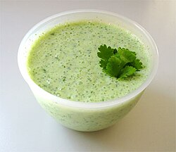
KoshimbirRaita with cucumber and mint.jpg by Elisabeth Nara at English Wikipedia, CC BY-SA 3.0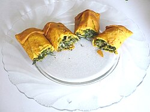
Kothimbir vadiKothimbir vadi.JPG by सदस्य:वि.नरसीकर, CC BY-SA 4.0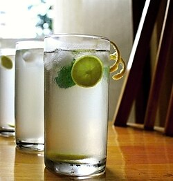
Lemon sarbatNimbu pani.JPG by Archana Joshi, CC BY-SA 4.0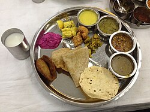
Maharashtrian thali (unlimited)Maharashtrian Thali 2.JPG by Advaitj11, CC BY-SA 4.0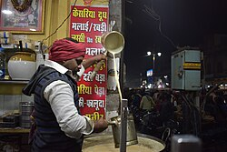
Masala doodhKesaria Doodh(Saffron Milk)-Varanasi-UttarPradesh-DSC001.jpg by Sayantanb211, CC BY-SA 4.0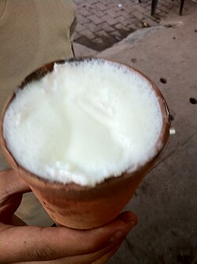
Masala taakChaach.JPG by Rayraider, CC BY-SA 4.0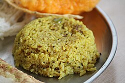
Masale bhaatMasale Bhat -Homemade - Maharashtra.jpg by Phadke09, CC BY-SA 4.0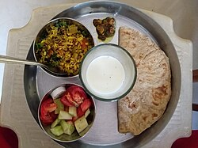
Matki usalMatki sprout usal chapati ambehalad pickel taak salad.jpg by Meena Kharatmal, CC BY-SA 4.0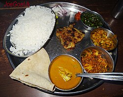
Mini thaliFish Curry Rice Thali (28111667531).jpg by Joegoaukfishcurry2, CC BY-SA 2.0 Misal pav*Misal Pav*.jpg by Ishanya 1507, CC BY-SA 4.0
Misal pav*Misal Pav*.jpg by Ishanya 1507, CC BY-SA 4.0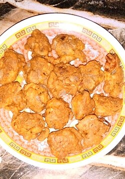
Mixed bhaji platePakora plate.jpg by JogiAsad, CC BY-SA 4.0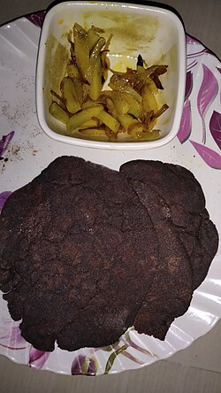
Nachni (ragi) bhakriRagi roti.jpg by Medhi jyoti, CC BY-SA 4.0 Pav bhajiBhaji pav 2.jpg by BHAAGIi, CC BY-SA 4.0
Pav bhajiBhaji pav 2.jpg by BHAAGIi, CC BY-SA 4.0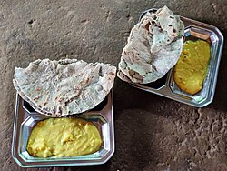
Pithla bhakriPithla-Bhakri (51373736404).jpg by solarisgirl, CC BY-SA 2.0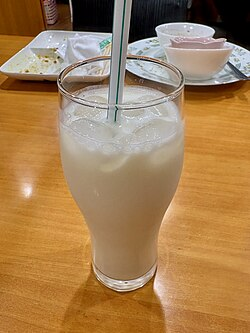
PiyushPlain Lassi in a glass.jpg by Kyu3a, CC BY-SA 4.0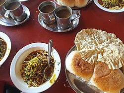
Puneri misalPuneri misal pav.jpg by Wind Hashira, CC BY-SA 4.0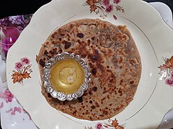
Puran poli with gheePuran Poli with Ghee.jpg by Pratha Bopche, CC BY-SA 4.0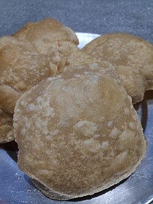
Puri (3)Puri (food).jpg by Gaurav Dhwaj Khadka, CC BY-SA 4.0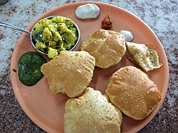
Puri bhaji (tikhat)Puri Bhajji in Mumbai Restaurant.JPG by Ask27, CC BY-SA 4.0 Rice bhakriBhakri 1.jpg by Hemal0105, CC BY-SA 4.0
Rice bhakriBhakri 1.jpg by Hemal0105, CC BY-SA 4.0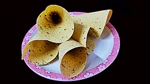
Roasted papadPapad (roasted).jpg by Navaneeth Krishnan S, CC BY-SA 4.0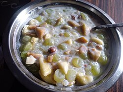
Sabudana kheerSabudana Kheer , A dist of Rajasthan.jpg by Omkarwiki81, CC BY-SA 4.0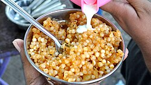
Sabudana khichdiSabudana Khichdi with Sweet curd.JPG by Dheerajk88, CC BY-SA 4.0 Sabudana vadaSabudana Vada.jpg by Yakshitha, CC BY-SA 4.0
Sabudana vadaSabudana Vada.jpg by Yakshitha, CC BY-SA 4.0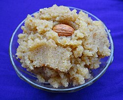
SheeraSooji Halwa (Semolina Pudding).JPG by Mdsmds0, CC BY-SA 4.0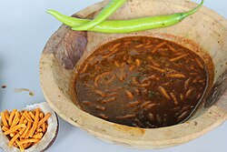
Shev bhajiShev Bhaaji.JPG by Rahul Patil, CC BY-SA 4.0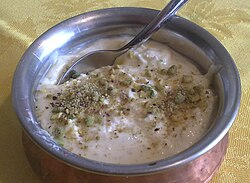
ShrikhandShrikhand london kastoori.jpg by Secretlondon, CC BY-SA 3.0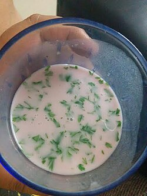
SolkadhiSol kadhi.jpg by Bhagyashree1501, CC BY-SA 4.0 Special thali with puran poliMaharashtrian Thali 2.JPG by Advaitj11, CC BY-SA 4.0
Special thali with puran poliMaharashtrian Thali 2.JPG by Advaitj11, CC BY-SA 4.0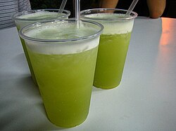
Sugarcane juice (in season)Sugarcanejuice.jpg by Food Trails, CC BY-SA 2.0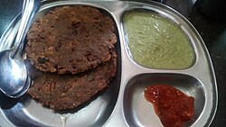
Thalipeeth with white butterThalipeeth - Maharashtra.jpg by Avinashvh1n1, CC BY-SA 4.0- Ukadiche modak (Tuesdays)Ukadiche Modak, full and split.jpg by Dharmadhyaksha, CC BY-SA 4.0
- UpmaUpma South India.JPG by Intodustin, CC BY-SA 4.0
- Upvas misal (fasting)Home made Sabudana Khichdi Fasting Delicacies.jpg by Daksha2705, CC BY-SA 4.0
- Upvas thaliShivratri fast thali.jpg by YKanchan07, CC BY-SA 4.0
- Upvas thalipeethBhajani Thalipeeth.jpg by Sulabha prabhune, CC BY-SA 4.0
- Vada pavCrunchy Crispy Vada pav.jpg by Sharvarism, CC BY-SA 4.0
- Vangi bhaatVaanghi Baath.jpg by Sherin, CC BY-SA 4.0
- Varan bhaat & tupVaran Bhat.jpg by Kashmira3091, CC BY-SA 4.0
- White butter (loni)Butter dish.jpg by The Digital Pimp, CC BY 2.0
- Zunka bhakriZunka Bhakar.jpg by Satyajit Dhawale (Satyajit888), CC BY-SA 4.0


.jpg){kind=link}

.jpg){kind=link}
.jpg){kind=link}


-Varanasi-UttarPradesh-DSC001.jpg){kind=link}


.jpg){kind=link}


.jpg){kind=link}


.jpg){kind=link}

.jpg){kind=link}


.JPG){kind=link}